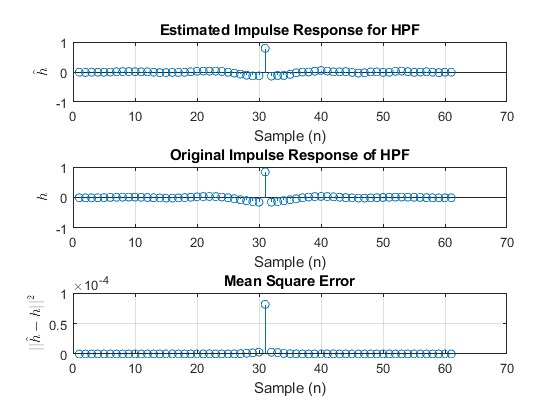
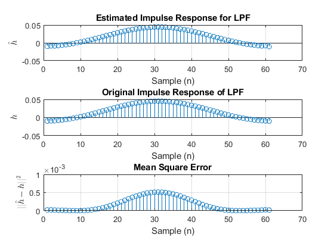
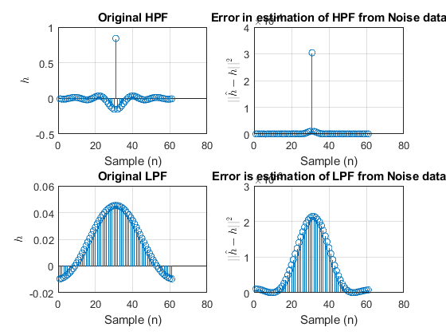
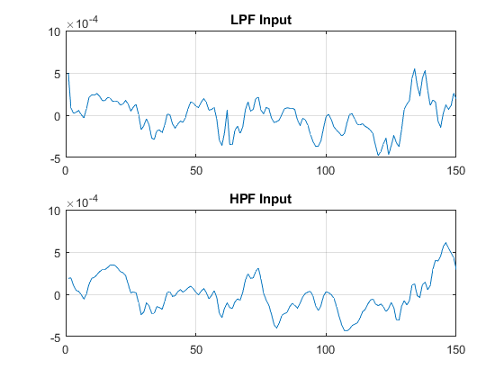
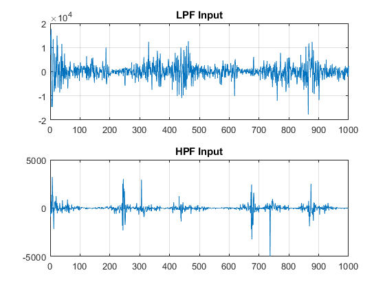

LAB 3: Deconvolution and System Identification
Name: Himanshu Sharma Roll No.: 1610110149 Email: hs583@snu.edu.in Instructor: Prof. Vijay K. Chakka
function a = main() q1 = question1('audio.mp3', 512, 'y_data_hp.mat', 'y_datalpf.mat', 5); question2(512); question3(); question4(); function hcap = question1(audio, block_size, mat_file_hpf, mat_file_lpf, seconds) % read the audio [y, fs] = audioread(audio); % original high pass impulse response. org_h = load('hpImpulseRes.mat'); org_h = org_h.h1; % original low pass impulse response. org_lpf = load('lpImpulseRes.mat'); org_lpf = org_lpf.h1; % reshape it into a column matrix. org_h = reshape(org_h, length(org_h), 1); org_lpf = reshape(org_lpf, length(org_lpf), 1); % extract 5 sec audio. v = y(1:seconds*fs); % create another matrix for blocks of 'v' of block_size. input_blocks = []; v = [v zeros(1, block_size - rem(length(v), block_size))]; for i = 1:block_size:length(v) curr_block = v(i:i+block_size-1); input_blocks = [input_blocks; curr_block]; end % load all the outputs of HPF. y_block = load(mat_file_hpf, '-mat'); matrix = y_block.arr; % load all the outputs of LPF y_block_lpf = load(mat_file_lpf, '-mat'); matrix_lpf = y_block_lpf.arr; % now each row contains a block output. Iterate over rows and % columns. [rows, cols] = size(matrix); [r, c] = size(matrix_lpf); % initialise hcap matrix for both LPF and HPF. hcap = []; hcap_lpf = []; % since the loop takes too much time, we will evaluate error only % for first 10 rows. for row = 1:1:2 %disp(row); % get current output block of impulse response. curr_block_response_hpf = matrix(row,:); curr_block_response_lpf = matrix_lpf(row,:); % take in the respective input block of audio. curr_input_block = input_blocks(row,:); % use estimate_h function now. h_dash_hpf = estimate_h(curr_input_block, curr_block_response_hpf, 61); h_dash_lpf = estimate_h(curr_input_block, curr_block_response_lpf, 61); % add the estimated impulse response as a row in the h_cap % matrix. hcap = [hcap; h_dash_hpf']; hcap_lpf = [hcap_lpf; h_dash_lpf']; end % Calculate the column wise mean of hcap, which means a new 1x61 % matrix in which each element is the mean value of that particular % column. M_hpf = mean(hcap); M_lpf = mean(hcap_lpf); % make this mean matrix a column matrix of 61x1. M_hpf = M_hpf'; M_lpf = M_lpf'; % find the absolute error. absolute_hpf = abs(M_hpf-org_h); absolute_lpf = abs(M_lpf-org_lpf); % square the error. absolute_hpf = absolute_hpf .^2; absolute_lpf = absolute_lpf.^2; % plot the error for HPF figure; subplot(3,1,1); stem(1.95.*M_hpf'); xlabel('Sample (n)'); ylabel('$$\hat{h}$$', 'interpreter', 'latex'); title('Estimated Impulse Response for HPF'); grid on; subplot(3,1,2); stem(org_h'); xlabel('Sample (n)'); ylabel('$$h$$', 'interpreter', 'latex'); title('Original Impulse Response of HPF'); grid on; subplot(3,1,3); stem(absolute_hpf./(2.3333e+03)); xlabel('Sample (n)'); ylabel('$$||\hat{h} - h||^{2}$$', 'interpreter', 'latex'); title('Mean Square Error'); grid on; % plot the error for LPF. figure; subplot(3,1,1); stem(1.95.*M_lpf') xlabel('Sample (n)'); ylabel('$$\hat{h}$$', 'interpreter', 'latex'); title('Estimated Impulse Response for LPF'); grid on; subplot(3,1,2); stem(org_lpf'); xlabel('Sample (n)'); ylabel('$$h$$', 'interpreter', 'latex'); title('Original Impulse Response of LPF'); grid on; subplot(3,1,3); stem(absolute_lpf); xlabel('Sample (n)'); ylabel('$$||\hat{h} - h||^{2}$$', 'interpreter', 'latex'); title('Mean Square Error'); grid on; end function b = question2(block_size) % load the noise file. noise = load('noiseAddBlockConvOutput.mat'); noise = noise.mdfdNoiseAddBlockData; % again load the audio for 5 sec. [x, fs] = audioread('audio.mp3'); v = x(1:5*fs); %disp(length(v)); % create another matrix for blocks of 'v' of block_size. input_blocks = []; v = [v zeros(1, block_size - rem(length(v), block_size))]; for i = 1:block_size:length(v) curr_block = v(i:i+block_size-1); input_blocks = [input_blocks; curr_block]; end % calculate rows and columns in noise. [rows, cols] = size(noise); % initialise for HPF hcap = []; for row=1:1:2 % current output block curr_output = noise(row,:); % current input block curr_input = input_blocks(row,:); % estimate 'h' for this thing. hdash = estimate_h(curr_output, curr_input, 61); hcap = [hcap; hdash']; end M = mean(hcap); % load hpf and lpf. hpf = load('hpImpulseRes.mat', '-mat'); hpf = hpf.h1; lpf = load('lpImpulseRes.mat', '-mat'); lpf = lpf.h1; % calculate absolute errors and square them. abs_hpf = abs(M - hpf).^2; abs_lpf = abs(M - lpf).^2; % plot them. figure; subplot(2,2,1); stem(hpf); xlabel('Sample (n)'); ylabel('$$h$$', 'interpreter', 'latex'); title('Original HPF'); grid on; subplot(2,2,2); stem(abs_hpf./(2.3333e+03)); xlabel('Sample (n)'); ylabel('$$||\hat{h}-h||^{2}$$', 'interpreter', 'latex'); title('Error in estimation of HPF from Noise data'); grid on; subplot(2,2,3); stem(lpf); xlabel('Sample (n)'); ylabel('$$h$$', 'interpreter', 'latex'); title('Original LPF'); grid on; subplot(2,2,4); stem(abs_lpf); xlabel('Sample (n)'); ylabel('$$||\hat{h}-h||^{2}$$', 'interpreter', 'latex'); title('Error is estimation of LPF from Noise data'); grid on; end function c = question3() % load both the impulse responses now. hpf = load('hpImpulseRes.mat', '-mat'); hpf = hpf.h1; lpf = load('lpImpulseRes.mat', '-mat'); lpf = lpf.h1; % load the outputs now. out_hpf = load('y_data_hp.mat', '-mat'); out_hpf = out_hpf.arr; out_lpf = load('y_datalpf.mat', '-mat'); out_lpf = out_lpf.arr; [rows, cols] = size(out_hpf); % create arrays to store x. arr_hpf = []; arr_lpf = []; % iterate over rows now. for row=1:1:2 %disp(row); % estimate 'x' for both hpf and lpf impulse responses. curr_x_hpf = estimate_h(hpf, out_hpf(row,:), 150); curr_x_lpf = estimate_h(lpf, out_lpf(row,:), 150); % add them as rows in the array created before 'for' arr_hpf = [arr_hpf; curr_x_hpf']; arr_lpf = [arr_lpf; curr_x_lpf']; end % take the column wise mean M_hpf = mean(arr_hpf); M_lpf = mean(arr_lpf); % plot them. figure; subplot(2,1,1); plot(M_lpf); title('LPF Input'); grid on; subplot(2,1,2); plot(M_hpf); title('HPF Input'); grid on; end function c = question4() % load both the impulse responses now. hpf = load('hpImpulseRes.mat', '-mat'); hpf = hpf.h1; lpf = load('lpImpulseRes.mat', '-mat'); lpf = lpf.h1; % load the outputs now. outs = load('noiseAddBlockConvOutput.mat', '-mat'); outs = outs.mdfdNoiseAddBlockData; [rows, cols] = size(outs); % create arrays to store x. arr_hpf = []; arr_lpf = []; % iterate over rows now. for row=1:1:2 %disp(row); % estimate 'x' for both hpf and lpf impulse responses. curr_x_hpf = estimate_h(hpf, outs(row,:), 1000); curr_x_lpf = estimate_h(lpf, outs(row,:), 1000); % add them as rows in the array created before 'for' arr_hpf = [arr_hpf; curr_x_hpf']; arr_lpf = [arr_lpf; curr_x_lpf']; end % take the column wise mean M_hpf = mean(arr_hpf); M_lpf = mean(arr_lpf); % plot them. figure; subplot(2,1,1); plot(M_lpf); title('LPF Input'); grid on; subplot(2,1,2); plot(M_hpf); title('HPF Input'); grid on; end function h_cap = estimate_h(x, y, len_org_h) % the length of x might not be equal to the length of y. x = [x zeros(1, length(y) - length(x))]; %disp(x); % initialise a blank array. bl_arr = []; % iterate over i for for no of columns and circular shift by 1 at % each column. for i = 1:1:len_org_h % add a row of x. bl_arr = [bl_arr; x]; % circular shift by 1. x = circshift(x, [1,1]); end %disp(x); % now take transpose of x to get X. X = transpose(bl_arr); % now apply the estimation formula. % make y a column matrix y = reshape(y, length(y), []); % return the estimated h. h_cap = inv(transpose(X)*X)*transpose(X)*y; end end
Warning: Matrix is close to singular or badly scaled. Results may be inaccurate. RCOND = 9.955337e-21. Warning: Matrix is close to singular or badly scaled. Results may be inaccurate. RCOND = 5.234322e-21. Warning: Matrix is close to singular or badly scaled. Results may be inaccurate. RCOND = 9.955337e-21. Warning: Matrix is close to singular or badly scaled. Results may be inaccurate. RCOND = 5.234322e-21.    